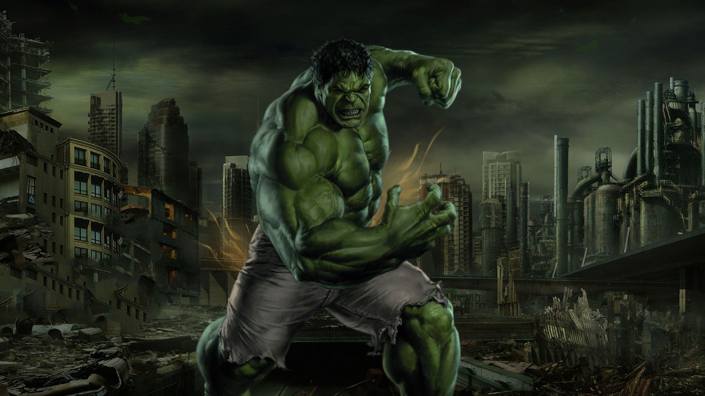
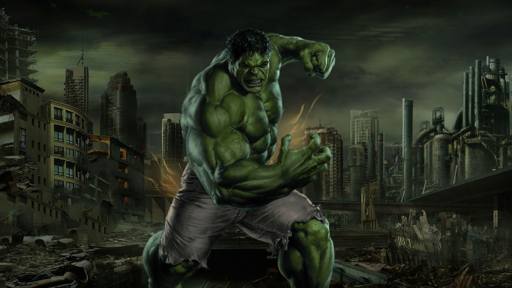
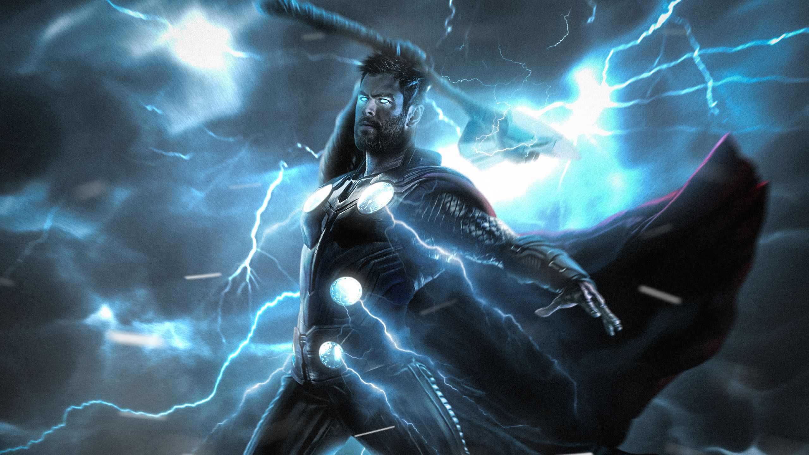
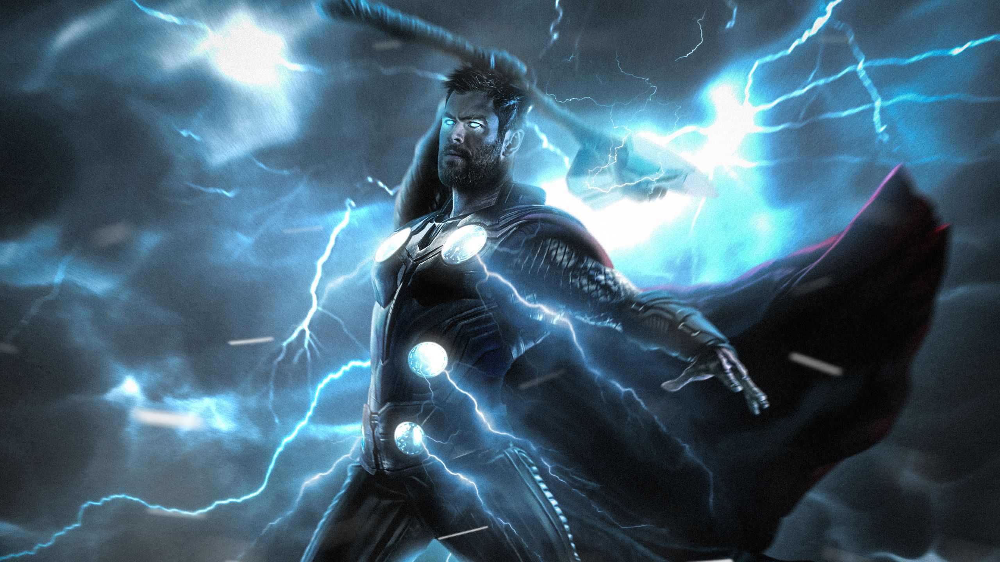

 

Avengers
Conheça os Vingadores principais herois da Marvel
Homem de Ferro
O Homem de Ferro, ou Tony Stark, é um dos principais membros dos Vingadores. Ele é um gênio bilionário que criou uma armadura tecnológica para combater ameaças. Seu papel é essencial, tanto por liderar e financiar a equipe quanto por desenvolver tecnologias cruciais. Stark faz o sacrifício final em Vingadores: Ultimato, usando as Joias do Infinito para derrotar Thanos, morrendo no processo e deixando um legado heroico.
Capitão América
O Capitão América, ou Steve Rogers, é o líder moral dos Vingadores. Um herói da Segunda Guerra Mundial, ele foi transformado em super-soldado por um soro especial. Após ficar congelado por décadas, ele é despertado no presente, trazendo consigo valores como honra, coragem e lealdade. Rogers é o coração da equipe, sempre colocando o bem coletivo acima de interesses pessoais.
Hulk
O Hulk, ou Bruce Banner, é um cientista que se transforma em um gigante verde com força descomunal ao ficar com raiva. Nos Vingadores, ele é uma arma poderosa, mas também lida com o conflito entre sua inteligência e o monstro dentro de si. Ao longo dos filmes, ele aprende a equilibrar suas duas personalidades, unindo a mente de Banner com a força de Hulk.
Gavião Arqueiro
O Gavião Arqueiro, ou Clint Barton, é um mestre arqueiro e um dos membros fundadores dos Vingadores. Ele não possui superpoderes, mas se destaca por suas incríveis habilidades com o arco e flecha, além de sua experiência como agente da SHIELD. Barton é um estrategista nato e tem grande lealdade à sua equipe. Apesar de ser um herói, ele valoriza profundamente sua vida pessoal e sua família, que muitas vezes servem como sua motivação. Sua habilidade de enfrentar grandes ameaças ao lado de seres superpoderosos mostra sua importância dentro da equipe.
Viúva Negra
A Viúva Negra, ou Natasha Romanoff, é uma ex-espiã russa e uma das integrantes mais habilidosas dos Vingadores. Sem superpoderes, ela usa suas habilidades em combate corpo a corpo, espionagem e inteligência estratégica. Natasha tem um passado sombrio ligado ao programa da "Sala Vermelha", onde foi treinada como assassina, mas busca redenção ao se juntar à SHIELD e, posteriormente, aos Vingadores. Ao longo dos filmes, ela se torna uma peça essencial da equipe, sempre mantendo laços fortes com seus companheiros e sendo conhecida por sua coragem e lealdade.
Thor
Thor, o Deus do Trovão, é um dos membros mais poderosos dos Vingadores. Filho de Odin e príncipe de Asgard, ele agora empunha o machado Stormbreaker, que lhe concede ainda mais poder e a capacidade de controlar os raios e viajar entre os mundos. Inicialmente arrogante e impulsivo, Thor amadurece ao longo de suas aventuras, aprendendo o valor da humildade e da liderança. Ele protege tanto a Terra quanto os Nove Reinos, enfrentando inimigos poderosos como Loki, seu irmão adotivo, e outras ameaças cósmicas. Thor é um guerreiro corajoso e leal, sempre pronto para lutar ao lado de seus companheiros Vingadores.